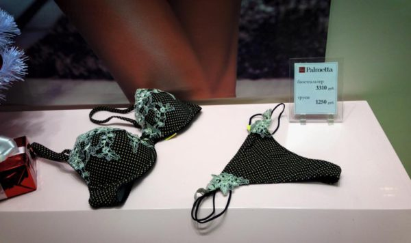

Пока моя спутница сегодня примеряла шикарное нижнее бельё в Пальметте в «Лапландии», я сновал из бутика в проход между бутиками и обратно.

После 2-3 моих входов в бутик, продавщицы попросили меня не ходить туда-обратно. У них стоит счётчик на входе и на зарплате сказывается коэффициент посетитель/покупатель.
Это были новости кемеровского маркетинга. Оставайтесь на связи.